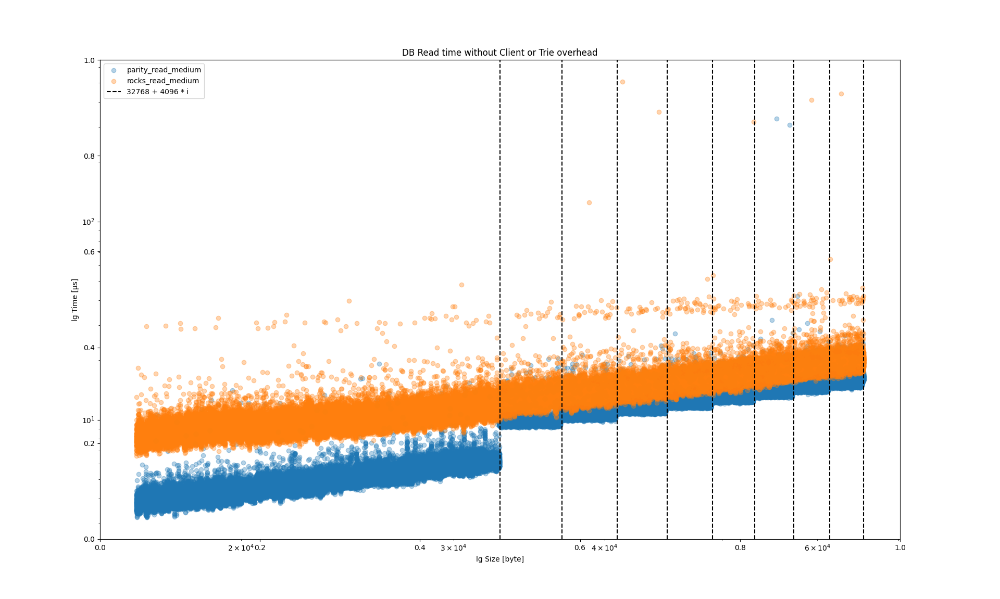

<!DOCTYPE html>
<html lang="en">

<head>
  <meta charset="utf-8" />
  <meta name="viewport" content="width=device-width, initial-scale=1.0, maximum-scale=1.0, user-scalable=no" />

  <title>More FRAME Benchmarking</title>
  <link rel="shortcut icon" href="./../../../assets/favicon.ico" />
  <link rel="stylesheet" href="./../../../dist/reset.css" />
  <link rel="stylesheet" href="./../../../dist/reveal.css" />
  <link rel="stylesheet" href="./../../../assets/styles/PBA-theme.css" id="theme" />
  <link rel="stylesheet" href="./../../../css/highlight/shades-of-purple.css" />

  <link rel="stylesheet" href="./../../.././assets/styles/custom-classes.css" />

</head>

<body class="site">
  <header class="site-header">
    <!-- This logo is a link only on the watching server, not the production build -->
      
  </header>
  <main class="reveal">
    <article class="slides">
      <section  data-markdown><script type="text/template">

# More FRAME Benchmarking
</script></section><section  data-markdown><script type="text/template">
## Overview

- Databases
- Our Learnings Throughout Development
- Best Practices and Common Patterns
</script></section><section  data-markdown><script type="text/template">
# Databases
</script></section><section  data-markdown><script type="text/template">
### RocksDB

A Persistent Key-Value Store for Flash and RAM Storage.

- Keys and values are arbitrary byte arrays.
- Fast for a general database.

See http://rocksdb.org/.

Big project, can be very tricky to configure properly.

<aside class="notes"><p>(also a big part of substrate compilation time).</p>
</aside></script></section><section  data-markdown><script type="text/template">
### ParityDB

An Embedded Persistent Key-Value Store Optimized for Blockchain Applications.

- Keys and values are arbitrary byte arrays.
- Designed for efficiently storing Patricia-Merkle trie nodes.
  - Mostly Fixed Size Keys.
  - Mostly Small Values.
  - Uniform Distribution.
- Optimized for read performance.

<aside class="notes"><p>See: <a href="https://github.com/paritytech/parity-db/issues/82">https://github.com/paritytech/parity-db/issues/82</a></p>
<p>Main point is that paritydb suit the triedb model.
Indeed triedb store encoded key by their hash.
So we don&#39;t need rocksdb indexing, no need to order data.
Parity db index its content by hash of key (by default), which makes access faster (hitting entry of two file generally instead of possibly multiple btree indexing node).
Iteration on state value is done over the trie structure: having a KVDB with iteration support isn&#39;t needed.</p>
<p>Both rocksdb and paritydb uses &quot;Transactions&quot; as &quot;writes done in batches&quot;.
We typically run a transaction per block (all in memory before), things are fast (that&#39;s probably what you meant).
In blockchains, writes are typically performed in large batches, when the new block is imported and must be done atomically.
See: <a href="https://github.com/paritytech/parity-db">https://github.com/paritytech/parity-db</a></p>
<p>Concurrency does not matter in this, paritydb lock access to single writer (no concurrency).
Similarly code strive at being simple and avoid redundant feature: no cache in parity db (there is plenty in substrate).</p>
<p>&#39;Quick commit&#39; : all changes are stored in memory on commit , and actual writing in the WriteAheadLog is done in an asynchronous way.</p>
<p>TODO merge with content from <a href="https://github.com/paritytech/parity-db/issues/82">https://github.com/paritytech/parity-db/issues/82</a></p>
</aside></script></section><section  data-markdown><script type="text/template">
### ParityDB: Probing Hash Table

ParityDB is implemented as a probing hash table.

- As opposed to a log-structured merge (LSM) tree.
  - Used in Apache AsterixDB, Bigtable, HBase, LevelDB, Apache Accumulo, SQLite4, Tarantool, RocksDB, WiredTiger, Apache Cassandra, InfluxDB, ScyllaDB, etc...
- Because we do not require key ordering or iterations for trie operations.
- This means read performance is constant time, versus $O(\log{n})$.
</script></section><section  data-markdown><script type="text/template">
### ParityDB: Fixed Size Value Tables

- Each column stores data in a set of 256 value tables, with 255 tables containing entries of certain size range up to 32 KB limit.

<div class="text-smaller">

```rust
const SIZES: [u16; SIZE_TIERS - 1] = [
	32, 33, 34, 35, 36, 37, 38, 39, 40, 41, 42, 43, 44, 46, 47, 48, 50, 51, 52, 54, 55, 57, 58, 60,
	62, 63, 65, 67, 69, 71, 73, 75, 77, 79, 81, 83, 85, 88, 90, 93, 95, 98, 101, 103, 106, 109,
	112, 115, 119, 122, 125, 129, 132, 136, 140, 144, 148, 152, 156, 160, 165, 169, 174, 179, 183,
	189, 194, 199, 205, 210, 216, 222, 228, 235, 241, 248, 255, 262, 269, 276, 284, 292, 300, 308,
	317, 325, 334, 344, 353, 363, 373, 383, 394, 405, 416, 428, 439, 452, 464, 477, 490, 504, 518,
	532, 547, 562, 577, 593, 610, 627, 644, 662, 680, 699, 718, 738, 758, 779, 801, 823, 846, 869,
	893, 918, 943, 969, 996, 1024, 1052, 1081, 1111, 1142, 1174, 1206, 1239, 1274, 1309, 1345,
	1382, 1421, 1460, 1500, 1542, 1584, 1628, 1673, 1720, 1767, 1816, 1866, 1918, 1971, 2025, 2082,
	2139, 2198, 2259, 2322, 2386, 2452, 2520, 2589, 2661, 2735, 2810, 2888, 2968, 3050, 3134, 3221,
	3310, 3402, 3496, 3593, 3692, 3794, 3899, 4007, 4118, 4232, 4349, 4469, 4593, 4720, 4850, 4984,
	5122, 5264, 5410, 5559, 5713, 5871, 6034, 6200, 6372, 6548, 6729, 6916, 7107, 7303, 7506, 7713,
	7927, 8146, 8371, 8603, 8841, 9085, 9337, 9595, 9860, 10133, 10413, 10702, 10998, 11302, 11614,
	11936, 12266, 12605, 12954, 13312, 13681, 14059, 14448, 14848, 15258, 15681, 16114, 16560,
	17018, 17489, 17973, 18470, 18981, 19506, 20046, 20600, 21170, 21756, 22358, 22976, 23612,
	24265, 24936, 25626, 26335, 27064, 27812, 28582, 29372, 30185, 31020, 31878, 32760,
];
```

</div>

- The last 256th value table size stores entries that are over 32 KB split into multiple parts.
</script></section><section  data-markdown><script type="text/template">
### ParityDB: Fixed Size Value Tables

- More than 99% of trie nodes are less than 32kb in size.
- Small values only require 2 reads: One index lookup and one value table lookup.
- Values over 32kb may require multiple value table reads, but these are rare.
- Helps minimize unused disk space.
- For example, if you store a 670 byte value, it won't fit into 662 bucket, but will into 680 bucket, wasting only 10 bytes of space.

<aside class="notes"><p>That fact that most values are small allows us to address each value by its index and have a simple mechanism for reusing the space of deleted values without fragmentation and periodic garbage collection.</p>
</aside></script></section><section  data-markdown><script type="text/template">
### ParityDB: Asynchronous Writes

- Parity DB API exposes synchronous functions, but underlying IO is async.
- The `commit` function adds the database transaction to the write queue, updates the commit overlay, and returns as quickly as possible.
- The actual writing happens in the background.
- The commit overlay allows the block import pipeline to start executing the next block while the database is still writing changes for the previous block.
</script></section><section  data-markdown><script type="text/template">
### Practical Benchmarks and Considerations

Let's now step away from concepts and talk about cold hard data.
</script></section><section  data-markdown><script type="text/template">
### Common Runtime Data Size and Performance

<br/>

<div class="flex-container">
<div class="left">

- Most runtime values are 80 bytes, which are user accounts.
- Of course, this would depend on your chain's logic.

</div>
<div class="right" style="padding-left: 10px;">

<div class="r-stack">
	
	
</div>
</div>

<aside class="notes"><p>Impact of keys size is slightly bigger encoded node.
Since eth scaling issue, we usually focus on state nodes.
Other content access can be interesting to audit enhance though (with paritydb).</p>
<p>See more details here:</p>
<p><a href="https://substrate.stackexchange.com/questions/525/how-expensive-is-it-to-access-storage-items/526#526">https://substrate.stackexchange.com/questions/525/how-expensive-is-it-to-access-storage-items/526#526</a></p>
</aside></script></section><section  data-markdown><script type="text/template">
### RocksDB vs ParityDB Performance

At 32 KB, performance decreases for each additional 4 KB.


</script></section><section  data-markdown><script type="text/template">
### RocksDB Inconsistency


When doing benchmarking, we saw some really bizarre, but reproducible problems with RocksDB.
</script></section><section  data-markdown><script type="text/template">
## Things we tried

## Things we learned
</script></section><section  data-markdown><script type="text/template">
## Isolating DB Benchmarks (PR #5586)

<pba-cols>
<pba-col>

### We tried…

To benchmark the entire extrinsic, including the weight of DB operations directly in the benchmark. We wanted to:

- Populate the DB to be “full”
- Flush the DB cache
- Run the benchmark

</pba-col>
<pba-col>

### We learned…

RocksDB was too inconsistent to give reproducible results, and really slow to populate.
So we use an in-memory DB for benchmarking.


</pba-col>
</pba-cols>
</script></section><section  data-markdown><script type="text/template">
## Fixing Nonlinear Events (PR #5795)

<pba-cols>
<pba-col>

### We tried…

Executing a whole block, increasing the number of txs in each block. We expected to get linear growth of execution time, but in fact it was superlinear!


</pba-col>
<pba-col>

### We learned…

Each time we appended a new event, we were passing the growing event object over the Wasm barrier.

We updated the append api so only new data is pushed.


</pba-col>
</pba-cols>
</script></section><section  data-markdown><script type="text/template">
## Enabling Weight Refunds (PR #5584)

<pba-cols>
<pba-col>

### We tried…

To assign weights to all extrinsics for the absolute worst case scenario in order to be safe.

In many cases, we cannot know accurately what the weight of the extrinsic will be without reading storage… and this is not allowed!

</pba-col>
<pba-col>

### We learned…

That many extrinsics have a worst case weight much different than their average weight.

So we allow extrinsics to return the actual weight consumed and refund that weight and any weight fees.

</pba-col>
</pba-cols>
</script></section><section  data-markdown><script type="text/template">
## Customizable Weight Info (PR #6575)

<pba-cols>
<pba-col>

### We tried…

To record weight information and benchmarking results directly in the pallet.

</pba-col>
<pba-col>

### We learned…

This was hard to update, not customizable, and not accurate for custom pallet configurations.

</pba-col>
</pba-cols>

So we moved the weight definition into customizable associated types configured in the runtime trait.

```rust
#[weight = 45_000_000 + T::DbWeight::get().reads_writes(1,1)]
```

turned into...

```rust
#[weight = T::WeightInfo::transfer()]
```
</script></section><section  data-markdown><script type="text/template">
## Custom Benchmark Returns / Errors (PR #9517)
</script></section><section  data-markdown><script type="text/template">
## Negative Y Intercept Handling (PR #11806)
</script></section><section  data-markdown><script type="text/template">
## Multi-Dimensional Weight (Issue #12176)
</script></section><section  data-markdown><script type="text/template">
# Best Practices & Common Patterns
</script></section><section  data-markdown><script type="text/template">
## Initial Weight Calculation Must Be Lightweight

- In the TX queue, we need to know the weight to see if it would fit in the block.
- This weight calculation must be lightweight!
- No storage reads!

Example:

- Transfer Base: ~50 µs
- Storage Read: ~25 µs
</script></section><section  data-markdown><script type="text/template">
## Set Bounds and Assume the Worst!

- Add a configuration trait that sets an upper bound to some item, and in weights, initially assume this worst case scenario.
- During the extrinsic, find the actual length/size of the item, and refund the weight to be the actual amount used.
</script></section><section  data-markdown><script type="text/template">
## Separate Benchmarks Per Logical Path

- It may not be clear which logical path in a function is the “worst case scenario”.
- Create a benchmark for each logical path your function could take.
- Ensure each benchmark is testing the worst case scenario of that path.
</script></section><section  data-markdown><script type="text/template">
## Comparison Operators in the Weight Definition

```rust
#[pallet::weight(
   T::WeightInfo::path_a()
   .max(T::WeightInfo::path_b())
   .max(T::WeightInfo::path_c())
)]
```
</script></section><section  data-markdown><script type="text/template">
## Keep Extrinsics Simple

- The more complex your extrinsic logic, the harder it will be to accurately weigh.
- This leads to larger up-front weights, potentially higher tx fees, and less efficient block packing.
</script></section><section  data-markdown><script type="text/template">
## Use Multiple Simple Extrinsics

- Take advantage of UI/UX, batch calls, and similar downstream tools to simplify extrinsic logic.

Example:

- Vote and Close Vote (“last vote”) are separate extrinsics.
</script></section><section  data-markdown><script type="text/template">
## Minimize Usage of On Finalize

- `on_finalize` is the last thing to happen in a block, and must execute for the block to be successful.
- Variable weight needs at can lead to overweight blocks.


</script></section><section  data-markdown><script type="text/template">
## Transition Logic and Weights to On Initialize

- `on_initialize` happens at the beginning of the block, before extrinsics.
- The number of extrinsics can be adjusted to support what is available.
- Weight for `on_finalize` should be wrapped into on_initialize weight or extrinsic weight.
</script></section><section  data-markdown><script type="text/template">
## Understand Limitations of Pallet Hooks

- A powerful feature of Substrate is to allow the runtime configuration to implement pallet configuration traits.
- However, it is easy for this feature to be abused and make benchmarking inaccurate.
</script></section><section  data-markdown><script type="text/template">
## Keep Hooks Constant Time

- Example: Balances hook for account creation and account killed.
- Benchmarking has no idea how to properly set up your state to test for any arbitrary hook.
- So you must keep hooks constant time, unless specified by the pallet otherwise.
</script></section><section  data-markdown><script type="text/template">
# What’s next?

How you might be able to contribute!

- Gas / Fuel Metering
- Full Weight V2 Integration / Migration
- More Insight into DB / Memory Operations
- Smart suggestions to developers based on benchmarks
</script></section><section  data-markdown><script type="text/template">
<!-- .slide: data-background-color="#4A2439" -->

# Questions
</script></section>
    </article>
  </main>

  <script src="./../../../dist/reveal.js"></script>

  <script src="./../../../plugin/markdown/markdown.js"></script>
  <script src="./../../../plugin/highlight/highlight.js"></script>
  <script src="./../../../plugin/zoom/zoom.js"></script>
  <script src="./../../../plugin/notes/notes.js"></script>
  <script src="./../../../plugin/math/math.js"></script>
  <script>
    function extend() {
      var target = {};
      for (var i = 0; i < arguments.length; i++) {
        var source = arguments[i];
        for (var key in source) {
          if (source.hasOwnProperty(key)) {
            target[key] = source[key];
          }
        }
      }
      return target;
    }

    // default options to init reveal.js
    var defaultOptions = {
      controls: true,
      progress: true,
      history: true,
      center: true,
      transition: 'default', // none/fade/slide/convex/concave/zoom
      slideNumber: true,
      plugins: [
        RevealMarkdown,
        RevealHighlight,
        RevealZoom,
        RevealNotes,
        RevealMath
      ]
    };

    // options from URL query string
    var queryOptions = Reveal().getQueryHash() || {};

    var options = extend(defaultOptions, {"width":1400,"height":900,"margin":0,"minScale":0.2,"maxScale":2,"transition":"none","controls":true,"progress":true,"center":true,"slideNumber":true,"backgroundTransition":"fade"}, queryOptions);
  </script>


  <script>
    Reveal.initialize(options);
  </script>
</body>

</html>
